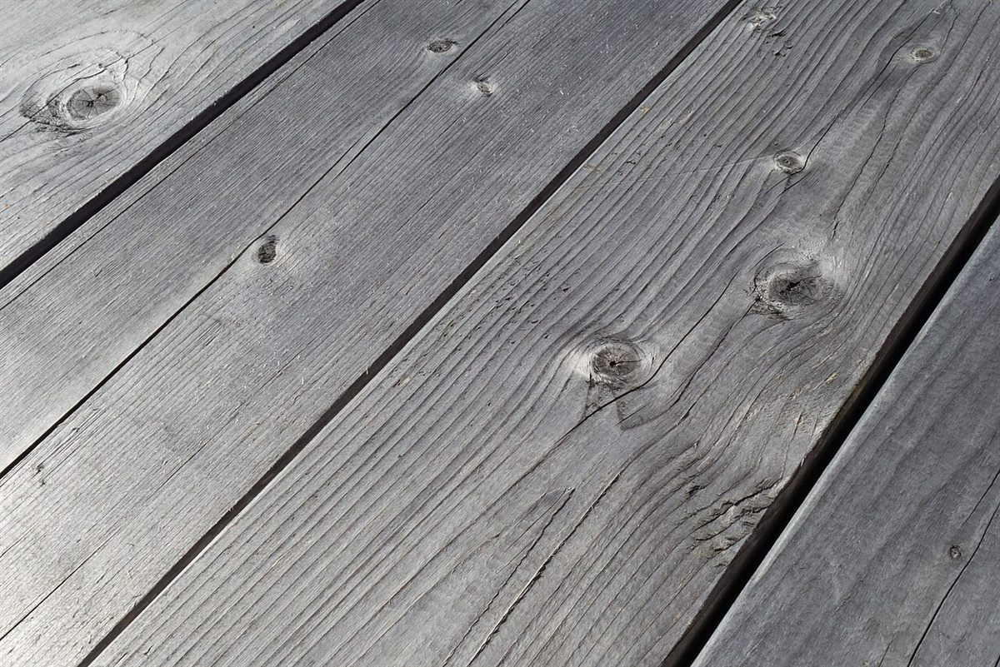

店のこと
店のこと
お店について確認できているのは、所在地とInstagramのアカウントだけです。
確認できていること
- 店名は「mill coffeestand」、業種はカフェ
- 所在地は長崎県佐世保市東浜町687-30(〒857-1172)
- 電話番号はなし。連絡はInstagramから
- 営業時間・定休日・メニュー・価格・ご予約・駐車場は準備中

想像してみる
「みる」から広がる色
このページの「想像してみる」部分は、制作側が想像して書いたものです。お店の実際の様子・考え・メニューとは関係がなく、屋号の由来とも無関係です。
屋号の意味は分かりません。制作側は「mill」の音から、海松(みる)色という緑がかった渋い色を連想し、このサイトの配色にしました。屋号に「coffeestand」と入っていますが、提供内容は確認できていないため、メニューは準備中としています。
